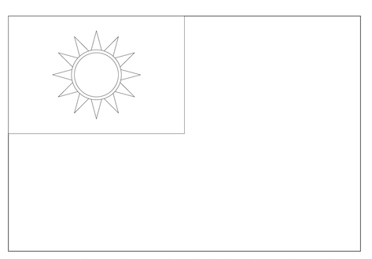
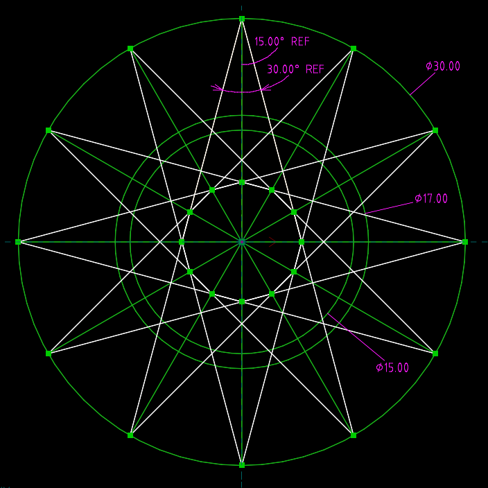
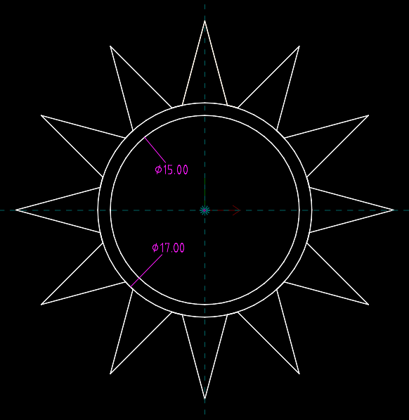

About <<
Previous Next >> s1511
程式應用
計算機程式課程的目的, 在提供機械設計工程師一個應用電腦與網路解決問題的選項, 其中的問題包括在產品開發過程中必須執行的許多重複且枯燥的工作流程, 必須儘可能地滿足不同客戶在不同時間點可能提出對於產品設計與製造上的需求.
機械設計工程師使用電腦與網路解決問題的情境, 可以用線上購物與實體商店作為比喻, 線上購物雖然無法完全取代實體商店, 但是作為線上購物店家, 顧客可以透過網路, 在較無時間與地點限制的情況下, 瀏覽與商品或服務有關的資訊, 店家只要完整地將各種產品有關的資訊呈現在網站上即可.
線上購物: 潛在客戶可以根據需求, 深入了解產品規格與保固條件, 瀏覽商品與購物過程所留下的歷程數據可以做為店家提供更好服務的參考.
實體購物: 潛在客戶只能在開店時段, 有機會實際碰觸實體產品, 但店家必須承擔人事、商品庫存與展示耗損成本.
由於機械產品的開發牽涉設計與製造等流程, 運用電腦與網路解決問題的最高目標, 取決於能否快速取得客戶對於產品的完整需求, 並在最短時間內交付產品, 且在產品生命週期中的各個階段, 使用電腦與網路提供最佳的服務.
利用程式控制機器執行製造程序:
已知利用 C 程式可以控制雷射 XY 工作平台中雷射頭移動(雷射切割), 且從 w6-w7 頁面中已知如何利用 C 程式繪製 ROC 國旗, 請問如何利用 C 程式引導雷射切割頭勾勒出 ROC 國旗圖案的外觀線條?


(graphics from here)

roc_flag_outline.slvs

roc_flag_outline-2.slvs
解題流程:
求出青天白日十二道光芒中的一個尖角, 與白日中間外圍圓形相交的兩個交接點座標後,畫出單一尖角後, 以 for 迴圈每次旋轉 30 度重複繪出十二道光芒尖角後, 中央再畫出兩個圓形.
Reference:
利用 Google 查詢:如何利用 C (ANSI C) 計算直線 (line) 與圓 (circle) 的交接點 (intersection) 座標 (coordinate)
ANSI C: American National Standards Institute, 美國國家標準局
與 ANSI C 有關的 pdf:
https://karadev.net/uroci/filespdf/files/Programming-in-ANSI-C.pdf
https://www.google.com/search?q=ansi+c+intersection+of+line+and+circle
How do I calculate the intersection(s) of a straight line and a circle? - Mathematics Stack Exchange (如何計算一條直線與圓的相交點?)
平面上直線的方程式? \(y = mx + c\), 其中 m 為直線斜率 (slope), c 為特定常數 (constant)
平面上圓的方程式? \((x-p)^2 + (y-q)^2 = r^2\), 其中圓心座標 (center coordinate) 為 \((p, q)\) 半徑 (radius) 為 \(r\)
將直線方程式與圓方程式聯立求解, 就可以求出交點的座標.
從 https://rosettacode.org/wiki/Line_circle_intersection 可以直接取得以 C 程式計算直線與圓的相交點原始碼.
roc_list_coord_flag.c (可以列出繪製 ROC flag 過程的點座標)
以下透過 ChatGPT 3.5 詢問: 請利用 c 寫一個 rotate_coord() 函式, 其輸入為起始點的 x 與 y 座標, 以及旋轉半徑 r, 還有順時針旋轉角度 theta, 其輸出則為旋轉之後的點座標.
gdImageFilledEllipse() 為橢圓形塗色函式, 而 gdImageEllipse() 則是繪製橢圓形線條函式.
假如利用 Python 的 sympy 解題會更簡單: line_circle_intersection.py
利用程式進行資料處理:
cp2023_1a_midterm.txt 1a 期中考週所填回的期望成績與分組組別, 請各組利用 C 程式列出各組成員名單 (未分組的學員請以亂數補至尚未滿 9 人的組別中).
參考: cp2023_1a_list_group_member.7z
About <<
Previous Next >> s1511